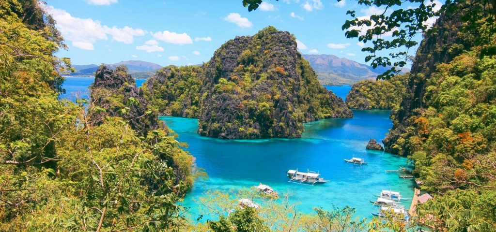

Het hart van ons missie ligt hier

In de Filipijnen groeit een groot aantal kinderen op met een lege maag.
Voor hen is honger geen tijdelijk ongemak, maar een dagelijkse werkelijkheid die hun gezondheid, ontwikkeling en toekomst beïnvloedt.
In buurten waar armoede overheerst, moeten veel gezinnen kiezen tussen een maaltijd of andere basisbehoeften.
Toch is er, ondanks deze moeilijke omstandigheden, een enorme veerkracht zichtbaar.
Gemeenschappen doen wat ze kunnen, vrijwilligers delen voedsel uit en scholen proberen kinderen op te vangen met programma’s die hen warmte en hoop bieden.
Maar elke dag dat een kind zonder voldoende voeding leeft, is er één te veel.
Het hongerprobleem vraagt om aandacht, steun en samenwerking, zodat elk kind in de Filipijnen kan opgroeien met de kansen en energie die het verdient.
Samen kunnen we ervoor zorgen dat geen enkel kind nog met een lege maag hoeft te dromen.
Met uw donatie kunnen we levens veranderen en een toekomst vol hoop bieden.